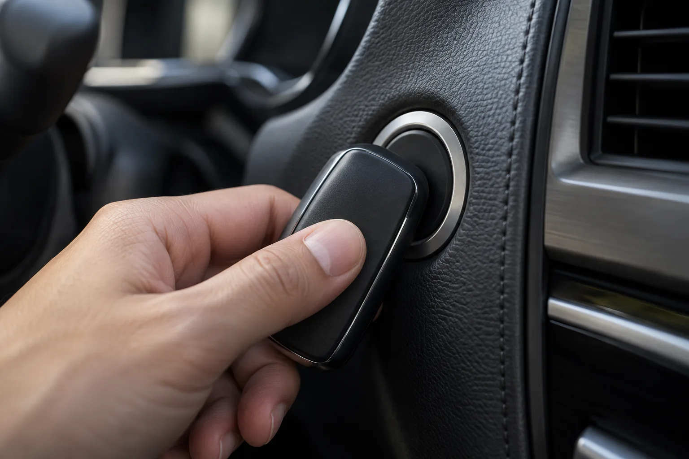
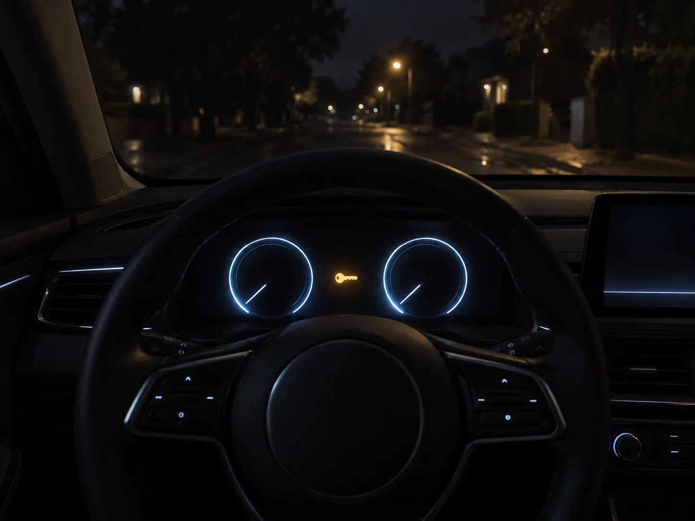
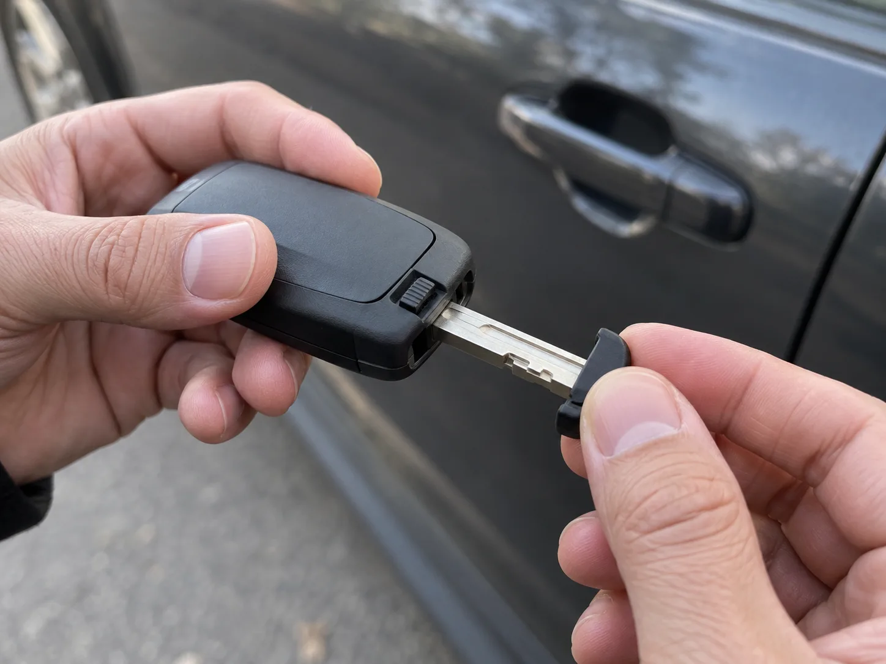
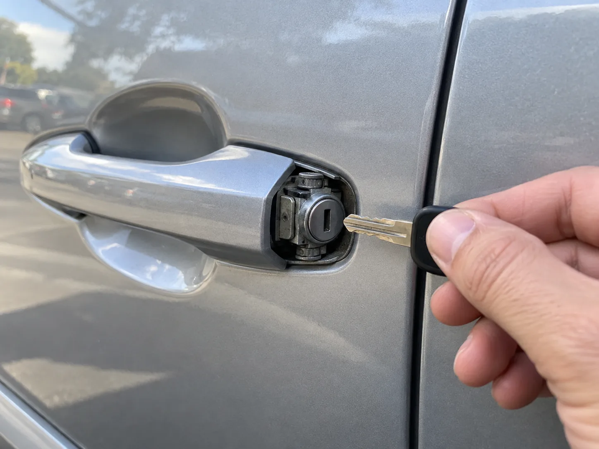
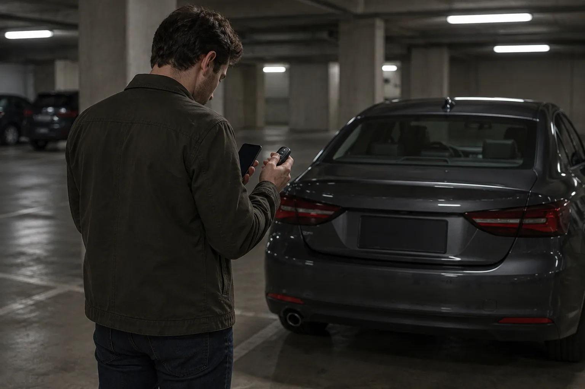
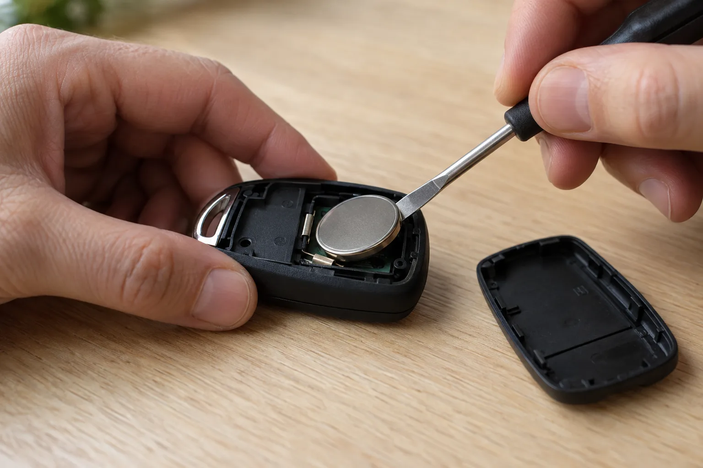

▲ 실제 촬영 사진이 아닌, 스마트키를 시동 버튼에 직접 대고 누르는 모습을 표현한 AI 생성 이미지다. 현대·기아·제네시스는 이렇게 키로 버튼을 누르면 배터리가 약해도 시동이 걸린다 이미지=AI 생성
주차장에서 시동 버튼을 눌렀는데 계기판에 "키가 감지되지 않습니다" 같은 문구가 뜨고 아무 반응이 없다면, 먼저 숨을 한 번 고르자. 대부분은 스마트키 속 코인 배터리가 약해진 경우이고, 이때는 키를 시동 버튼(또는 제조사가 정한 위치)에 직접 대는 것만으로 시동이 걸리도록 설계돼 있다. 배경 설명은 뒤로 미루고, 지금 해볼 것부터 정리했다.
1. 지금 바로 해볼 것 — 순서대로 따라 하기
스마트키는 배터리가 약해도 아주 가까운 거리에서는 차가 키를 읽어낼 수 있게 만들어져 있다. 현대차 취급설명서는 "스마트 키를 휴대하거나 차 안에 둔 상태에서도 시동이 걸리지 않는 경우에는 스마트 키로 시동 버튼을 직접 누르십시오"라고 안내하고, 기아 취급설명서도 배터리 방전이나 전자기기 전파 방해로 키를 인식하지 못하면 "스마트키로 시동 버튼을 직접 누르십시오"라고 적고 있다.
- 변속 레버를 P(주차)에 두고 브레이크 페달을 끝까지 밟는다. 수동변속기라면 클러치를 밟는다.
- 휴대폰·보조배터리·다른 차 키를 키에서 떼어 놓는다. 무선충전 패드 위에 키를 올려둔 상태라면 치운다.
- 키를 제조사가 정한 위치에 댄다. 국산차 대부분은 시동 버튼 자체, 수입차는 스티어링 칼럼의 키 표시나 컵홀더·콘솔의 전용 자리다(아래 표).
- 키를 댄 상태(또는 댄 직후)로 시동 버튼을 누른다. BMW는 키를 댄 뒤 10초 안에 눌러야 한다.
- 한 번에 안 되면 키 방향을 뒤집거나 면을 바꿔 다시 시도한다. 토요타처럼 "엠블럼 쪽 면"을 대라고 지정한 브랜드도 있다.
| 제조사 | 키를 대는 위치 | 비고 |
|---|---|---|
| 현대·기아·제네시스 | 스마트키로 시동 버튼을 직접 누름 | 브레이크를 밟은 상태에서. 그래도 안 되면 서비스센터 점검 안내 |
| 토요타·렉서스 | 키의 엠블럼 쪽 면을 시동 스위치에 터치 | P단·브레이크 → 부저가 울리면 인식 → 표시등 확인 후 시동 스위치 누름 |
| BMW | 키 뒷면을 스티어링 칼럼의 표시 부위에 댐 | 대고 난 뒤 10초 안에 브레이크(수동은 클러치) 밟고 Start/Stop. 모델에 따라 위치가 다를 수 있음 |
| 폭스바겐 | 시동 버튼을 누른 직후 키를 스티어링 칼럼 트림 오른쪽에 댐 | 계기판에 관련 메시지가 뜰 때 사용하는 비상 시동 기능 |
| 쉐보레 | 센터 콘솔 안 키 포켓 또는 컵홀더(차종별) | "NO REMOTE DETECTED" 류 메시지 → P단·브레이크 → ENGINE START/STOP |
| 볼보 | 컵홀더(터널 콘솔)의 백업 리더 위에 올려둠 | 컵홀더에 다른 키·휴대폰·충전기 등 금속·전자기기를 두지 말 것 |
| 테슬라(카드키) | 구형 모델3·Y: 컵홀더 뒤 센터 콘솔 윗면 / 2024년경 이후 생산분: 무선충전 패드 | 휴대폰 키가 안 잡힐 때 카드키를 리더 위에 대면 인식 |
📍 표에 없는 브랜드는 '키 모양 표시'를 찾자
르노코리아, KGM, 벤츠, 아우디 등은 이번 취재에서 제조사 공식 자료로 위치를 확인하지 못해 표에서 뺐다. 이런 차량은 우선 시동 버튼에 키를 직접 대고 누르기를 시도하고, 안 되면 스티어링 칼럼 주변·컵홀더 바닥·센터 콘솔 안쪽에 전파가 퍼지는 키 모양 아이콘이 있는지 찾아보자. 계기판 메시지가 "지정된 위치에 키를 두십시오"처럼 위치를 알려주는 경우도 많다. 가장 정확한 답은 글로브박스 속 취급설명서나 제조사 앱·웹 매뉴얼의 '비상시 조치' 항목에 있다.

▲ 실제 촬영 사진이 아닌, 계기판에 키 인식 경고가 뜬 상황을 표현한 AI 생성 이미지다. 계기판이 이렇게 정상적으로 켜진다면 차 배터리보다 스마트키 쪽 문제일 가능성이 크다 이미지=AI 생성
2. 문부터 안 열린다면 — 키 속 '기계식 비상 키'
키 배터리가 완전히 닳으면 버튼을 눌러도, 손잡이를 잡아도 문이 안 열린다. 이때를 대비해 대부분의 스마트키 안에는 금속 열쇠가 숨어 있다. 현대차·제네시스 취급설명서는 "방전 등 비상 상황에 대비하여 항상 비상 키를 가지고 다니십시오"라고 안내하고, 볼보도 키 배터리가 방전되면 탈착식 키 블레이드로 문을 열 수 있다고 설명한다. 일부 최신 차종은 비상 키가 스마트키와 분리돼 별도로 제공되니, 평소 어디에 두었는지 확인해 두자.
- 키 옆면·뒷면의 작은 잠금 버튼(래치)을 밀거나 누른 채 금속 키를 당겨 뽑는다.
- 운전석 바깥 손잡이에 열쇠 구멍이 보이지 않으면, 손잡이 끝부분의 커버 뒤에 숨어 있는 경우가 많다. 커버 아래쪽 틈에 비상 키 끝을 넣어 살짝 들어 올리면 빠진다.
- 열쇠를 꽂아 돌리면 운전석 문이 열린다. 토요타는 키를 뒤쪽으로 돌리면 운전석, 3초 안에 한 번 더 돌리면 나머지 문이 열린다고 안내한다.
- 문을 열 때 도난 경보가 울릴 수 있다. 당황하지 말고 1장의 방법으로 시동을 걸면 대부분 멈춘다.

▲ 실제 촬영 사진이 아닌, 스마트키에서 기계식 비상 키를 뽑는 모습을 표현한 AI 생성 이미지다. 래치 위치와 모양은 차종마다 다르다 이미지=AI 생성

▲ 실제 촬영 사진이 아닌, 도어 손잡이 커버 뒤에 숨은 열쇠 구멍을 표현한 AI 생성 이미지다. 실제 차량은 커버만 살짝 빠지고 내부 부품은 거의 보이지 않는다 이미지=AI 생성
3. 그래도 안 된다면 — 증상으로 원인 가르기
키를 버튼에 대도 반응이 없다면, 원인이 키가 아닐 수 있다. 가장 쉬운 구분법은 계기판과 실내등이 얼마나 밝게 켜지는지를 보는 것이다.
| 원인 | 이런 증상이면 의심 | 할 일 |
|---|---|---|
| 스마트키 배터리 소모 | 계기판은 정상적으로 켜지는데 "키 감지 안 됨" 메시지. 버튼 반응 거리가 최근 점점 짧아졌다 | 1장 방법으로 시동 → 키 배터리 교체 |
| 차 배터리 방전 | 문 잠금 해제부터 반응이 약하거나 없음. 계기판·실내등이 어둡거나 깜빡임, 시동 버튼을 눌러도 '딸깍' 소리만 남 | 키 문제가 아님 → 점프 시동 또는 긴급출동 |
| 전파 간섭 | 특정 장소(방송·통신 시설 근처 등)에서만, 혹은 휴대폰·무선충전기 옆에 키를 뒀을 때만 인식 불량 | 키를 다른 기기와 떼어 놓고 재시도, 장소를 옮기면 정상화 |
| 키 고장·분실 키 등록 문제 | 새 배터리로 바꿔도 동일, 보조키로는 정상. 떨어뜨리거나 물에 젖은 적이 있음 | 보조키 사용, 서비스센터에서 키 점검·재등록 |
제네시스 취급설명서는 스마트키 작동 거리를 줄이는 요인으로 경찰서·관공서·방송국·군부대·송신탑·공항·항구 근처, 그리고 무전기·휴대전화·휴대용 충전기 같은 송수신 기기를 꼽는다. 금속 성분이 든 선팅 필름도 수신률을 떨어뜨린다고 적혀 있다. 휴대폰과 키를 한 주머니나 무선충전 패드 위에 같이 두는 습관이 있다면 이것부터 바꿔 보자.
📍 차 배터리 방전이라면 이쪽으로
계기판이 아예 안 켜지거나 희미하다면 스마트키를 아무리 대도 소용이 없다. 점프 케이블 연결 순서와 보험사 긴급출동 이용법은 CarPrism의 자동차 배터리 방전·점프 시동 가이드에 정리해 두었다.

▲ 실제 촬영 사진이 아닌, 주차장에서 키 인식 문제로 난감해하는 운전자를 표현한 AI 생성 이미지다. 휴대폰과 키를 한 손에 겹쳐 쥐는 것도 인식을 방해할 수 있다 이미지=AI 생성
4. 키 배터리, 직접 바꾸면 5분
시동을 걸었다면 오늘 안에 키 배터리를 교체하는 게 좋다. 비상 시동은 말 그대로 임시 방편이다. 스마트키에는 동전 모양 리튬 전지가 들어가는데, 규격은 차종마다 다르다. 예컨대 현대차 2025년형 투싼과 2026년형 그랜저 취급설명서에는 CR2450, 테슬라 모델3 키 포브 교체 안내에는 CR2032가 명시돼 있다. 흔히 "스마트키는 CR2032"라고 알려져 있지만 그대로 믿고 사면 안 맞을 수 있으니, 기존 배터리 표면에 찍힌 규격을 확인하고 같은 것을 사자. 편의점·마트에서도 쉽게 구할 수 있다.
- 기계식 비상 키를 먼저 뽑는다(대부분 이 자리에 케이스를 여는 홈이 있다).
- 홈에 얇은 일자 드라이버나 동전을 넣고, 흠집이 나지 않게 부드러운 천을 덧대 살짝 비틀어 케이스를 연다.
- 기존 배터리의 + 면 방향을 기억해 두고 빼낸다.
- 새 배터리를 같은 방향으로 끼운다. 테슬라는 '+' 쪽을 위로 향하게 넣으라고 안내한다.
- 케이스를 닫고 잠금·해제 버튼과 시동이 정상인지 확인한다.

▲ 실제 촬영 사진이 아닌, 스마트키를 열어 코인 배터리를 교체하는 모습을 표현한 AI 생성 이미지다 이미지=AI 생성
📍 교체할 때 주의할 점
현대차 취급설명서는 극성을 반대로 넣으면 배터리가 방전돼 스마트키를 쓸 수 없다고 경고한다. 내부 회로는 정전기에 약하므로 기판을 손으로 만지지 말고, 물기와 열도 피해야 한다. 테슬라는 배터리의 평평한 면을 손으로 만지면 수명이 줄 수 있다고 안내한다. 코인형 리튬 전지는 어린이가 삼키면 짧은 시간 안에 심각한 손상을 일으킬 수 있으니 헌 배터리를 아무 데나 두지 말자. 직접 하기 어렵다면 제조사 서비스센터·협력 정비소에 교체를 맡기면 된다.
5. 이것만은 하지 말자
⚠️ 하면 안 되는 것
· 시동 버튼을 수십 번 연타하거나 오래 누르고 있기 — 인식 문제는 연타로 풀리지 않고, 차 배터리만 더 닳는다. 볼보는 3회 실패 시 3분 기다렸다 재시도하라고 안내한다
· 키를 휴대폰·보조배터리·다른 차 키와 겹쳐 대기 — 전파 간섭으로 오히려 인식이 안 될 수 있다
· 키 케이스를 칼·송곳으로 억지로 비틀어 열기 — 케이스가 깨지거나 기판이 손상되면 배터리가 아니라 키를 새로 사야 한다
· 규격이 비슷해 보이는 다른 배터리 끼우기 — 두께·전압이 달라 접촉 불량이나 오작동이 생길 수 있다
· 계기판이 어두운데 키 탓만 하기 — 차 배터리 방전이면 키를 백 번 대도 안 걸린다
· 시동 걸린 뒤 바로 꺼 버리기 — 키 배터리를 바꾸기 전까지는 목적지에서 다시 같은 상황이 온다는 점을 기억하자
6. 이럴 땐 부르자 — 서비스센터·긴급출동 기준
| 상황 | 권장 조치 |
|---|---|
| 키를 버튼·지정 위치에 대도 계속 인식 불가, 보조키도 똑같음 | 차량 쪽 안테나·인식 장치 문제 가능성 → 제조사 긴급출동·서비스센터 |
| 계기판·실내등이 어둡고 '딸깍' 소리만 남 | 차 배터리 방전 → 자동차보험 긴급출동(배터리 충전) 또는 점프 시동 |
| 키 배터리를 새로 넣었는데도 원격 버튼이 안 먹힘 | 극성·규격 재확인 후에도 안 되면 키 고장·재등록 필요 → 서비스센터 |
| 키를 분실했거나 비상 키 없이 문이 잠김 | 무리하게 문을 열지 말고 제조사 고객센터·긴급출동에 문의 |
| 비상 시동은 되지만 자주 반복됨 | 키 배터리 교체 후에도 반복되면 정비소에서 키·차량 인식 계통 점검 |
7. 정리 — 당황하지 말고 세 가지만
첫째, 브레이크를 밟고 키를 시동 버튼이나 제조사 지정 위치에 직접 대고 시동을 건다. 현대·기아·제네시스는 버튼을 키로 누르면 되고, 토요타는 엠블럼 면, BMW·폭스바겐은 스티어링 칼럼, 쉐보레·볼보는 콘솔·컵홀더, 테슬라는 카드 리더다.
둘째, 문이 안 열리면 키 속 비상 키로 운전석 손잡이 커버 뒤 열쇠 구멍을 쓴다. 계기판까지 어둡다면 키가 아니라 차 배터리 방전이니 점프 시동이나 긴급출동을 부른다.
셋째, 시동이 걸렸다면 오늘 안에 키 배터리를 바꾼다. 규격은 CR2032, CR2450 등 차종마다 다르니 기존 배터리에 찍힌 표기를 확인하고, 극성을 맞춰 넣으면 된다.